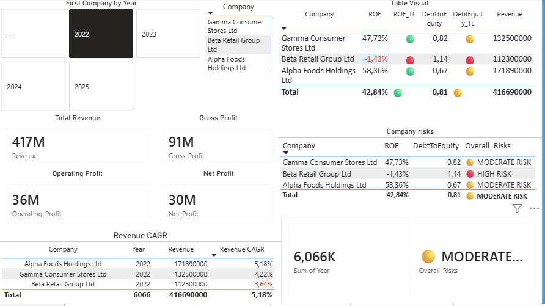
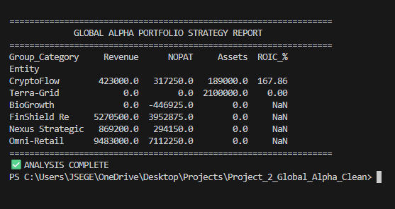
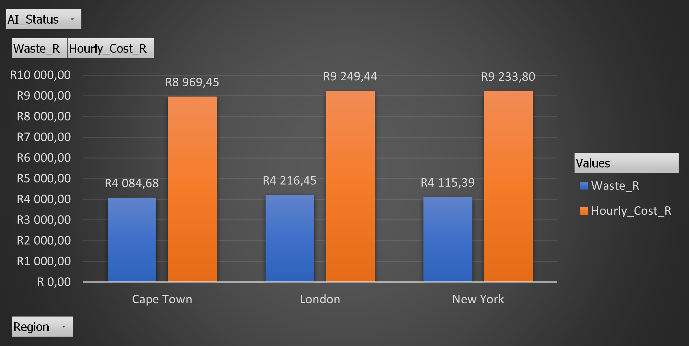
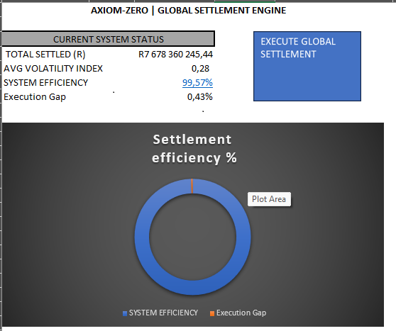

Strategic Finance Leader protecting capital and anticipating risk in high-growth enterprise environments.
Converting complex telemetry into CFO-level decision signals.

Identified 12% yield leakage in subscriber retention via granular churn modeling.

Collapsed reporting latency by 90% (from 5 days to 8 hours) via automated consolidation.

Technical waste audit identifying R107M in annual capital recovery potential.

Achieved 99.57% successful settlement rate using pre-execution risk gating circuits.
Interact with my "Digital Twin" to explore the methodology behind these projects.